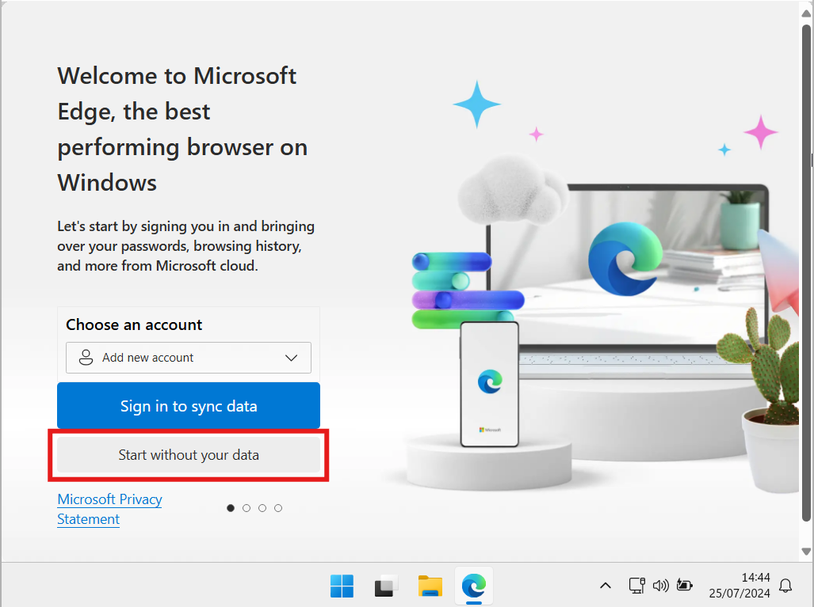
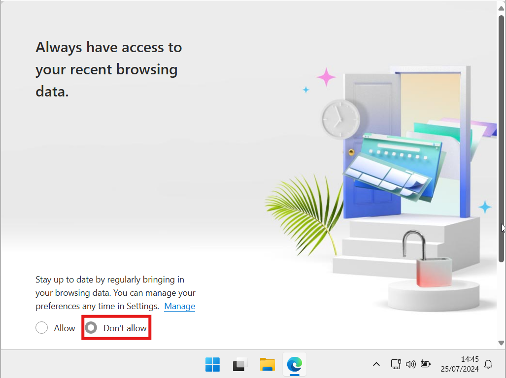
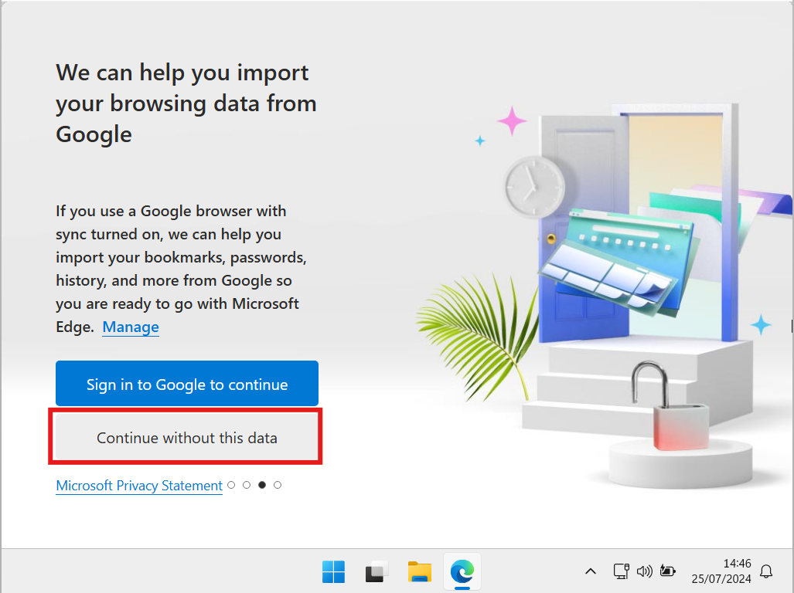
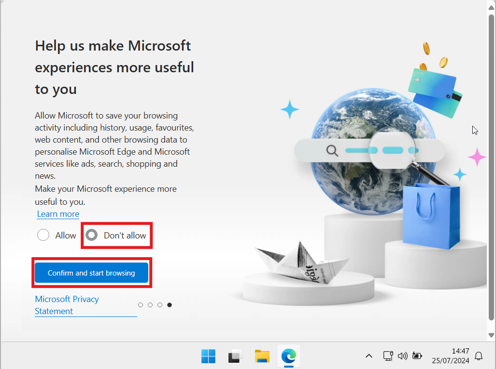
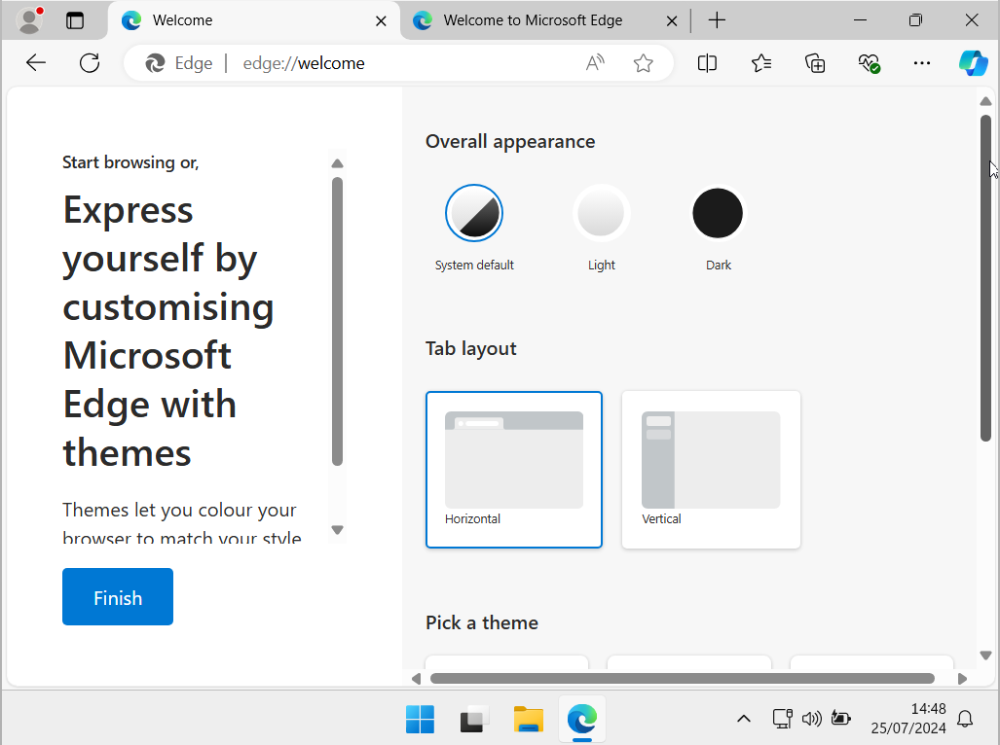
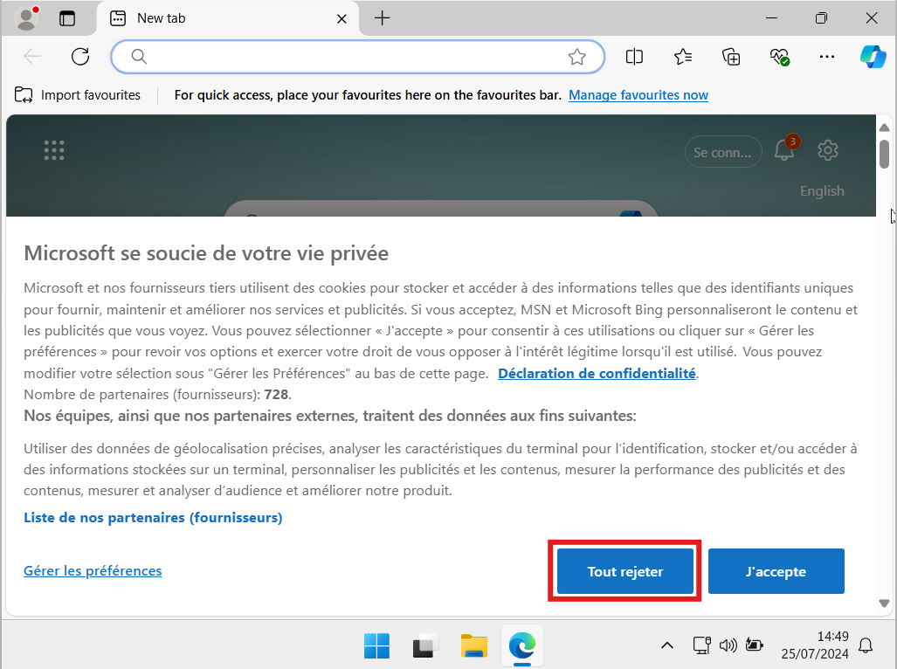

Il faut maintenant faire le choix de votre navigateur.
Par défaut, Microsoft Edge est installé.
⚠️ Microsoft Edge est un bon navigateur, il est très rapide et consomme peu de mémoire RAM et de ressources.
Il est basé sur Chromium, ce qui lui permet d'être compatible avec les extensions chrome. Je le recommande pour ceux qui souhaitent utiliser Google Chrome car il est plus rapide et plus léger.
En revanche, ce navigateur est réputé pour se lancer en arrière-plan, collecter et envoyer des données à Microsoft. (Tout comme Google fait avec Google Chrome par ailleurs)
Si vous souhaitez l'utiliser comme votre navigateur principal ou que vous souhaitez le garder, vous pouvez passer à l'étape suivante : Activation
Personnellement, je conseille d'installer Firefox, il est mondialement connu et est open-source.
De plus, il propose également des extensions, un compte pour synchroniser les recherches sur tous vos appareils et est disponible sur Android, IOS, MacOS.
Ici, je vais montrer comment installer Firefox en utilisant l'invite de commande (ce qui nous permettra par la suite d'enlever Microsoft Edge).
Enfin, si vous souhaitez utiliser un autre navigateur, installez celui de votre choix !
Pour commencer, ouvrir Microsoft Edge. et refuser toutes les options comme sur ces captures d'écran.
     Une fois toutes ces autorisations passées, aller sur la page de documentation actuelle de KJOS pour continuer sur PC:
Ouvrir Powershell et copier la commande:
Cette commande installera Firefox, et le lancera à la fin de l'installation. Vous pouvez fermer la fenêtre Firefox.
Maintenant que Firefox est installé, il est temps de désinstaller Microsoft Edge ainsi que toutes ses données et dépendances.
Pour cela, on va de nouveau utiliser le Powershell, et utiliser un outil open-source EdgeRemover.
Exécuter les commandes suivantes:
Cette première commande permet de désinstaller Microsoft Edge et toutes ses données ainsi que ses dépendances.
Cette deuxième commande permet de désactiver les mises à jour automatique ainsi que la réinstallation de Microsoft Edge après une mise à jour Windows.
C'est fini pour le navigateur, il faut maintenant activer Windows.